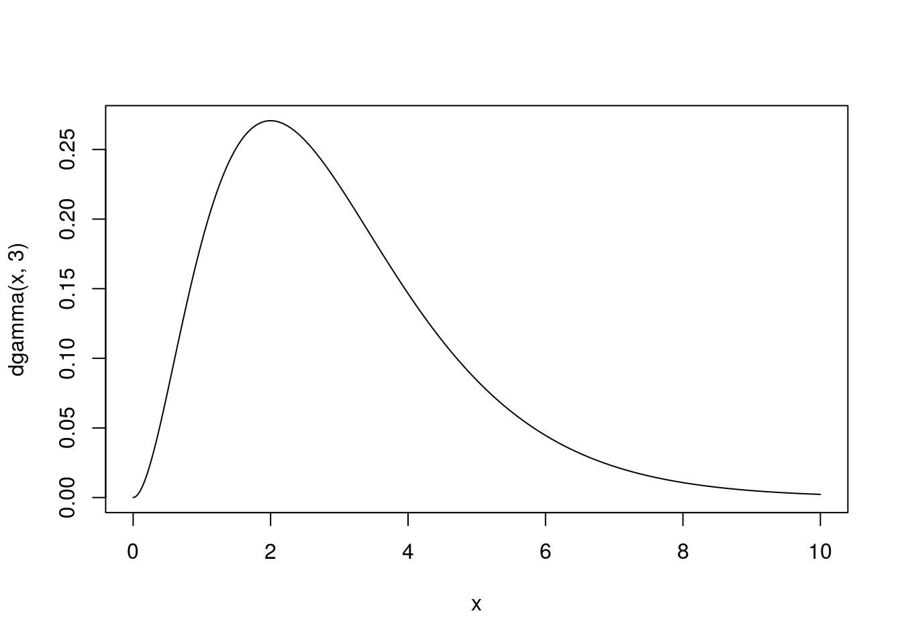
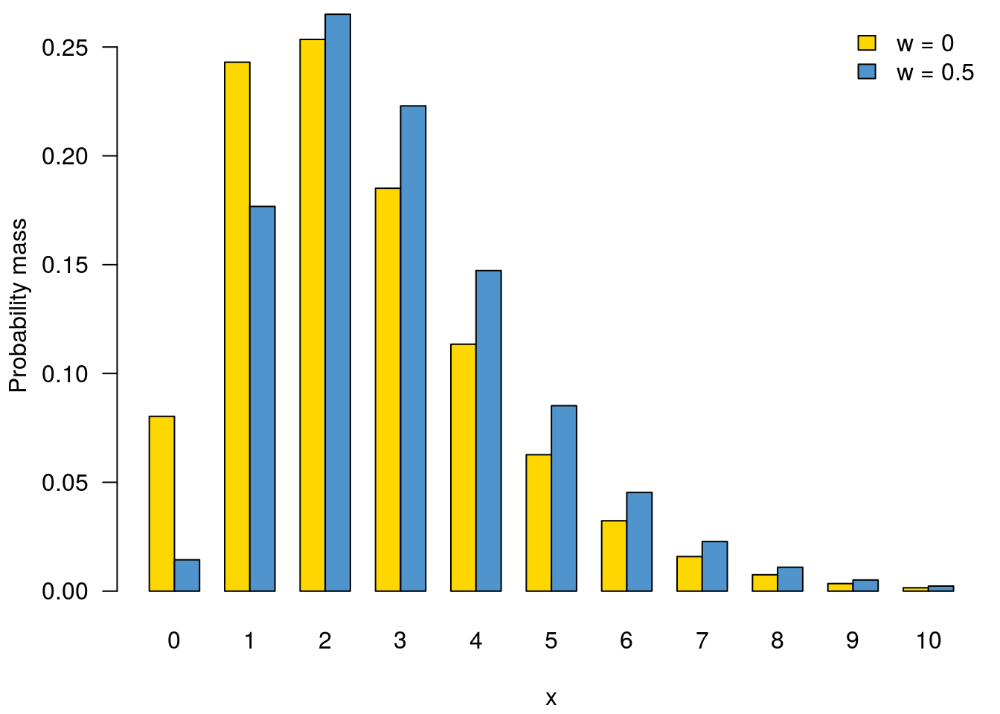
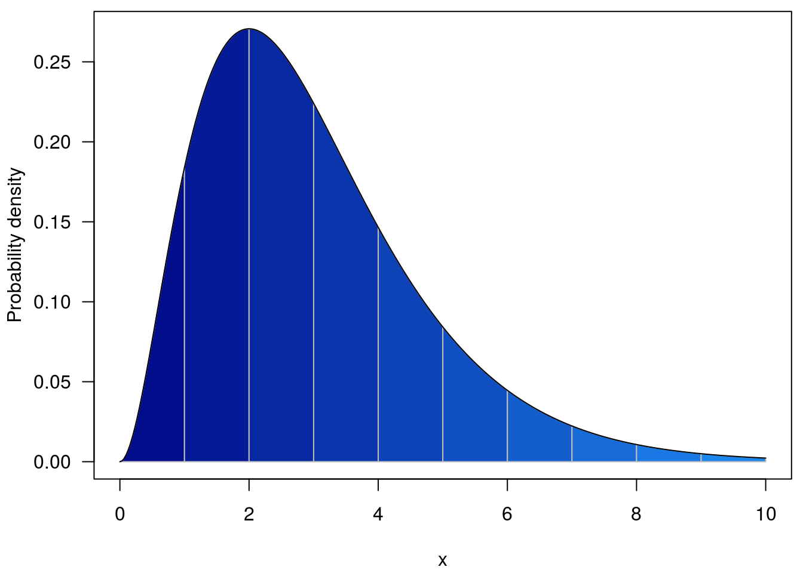
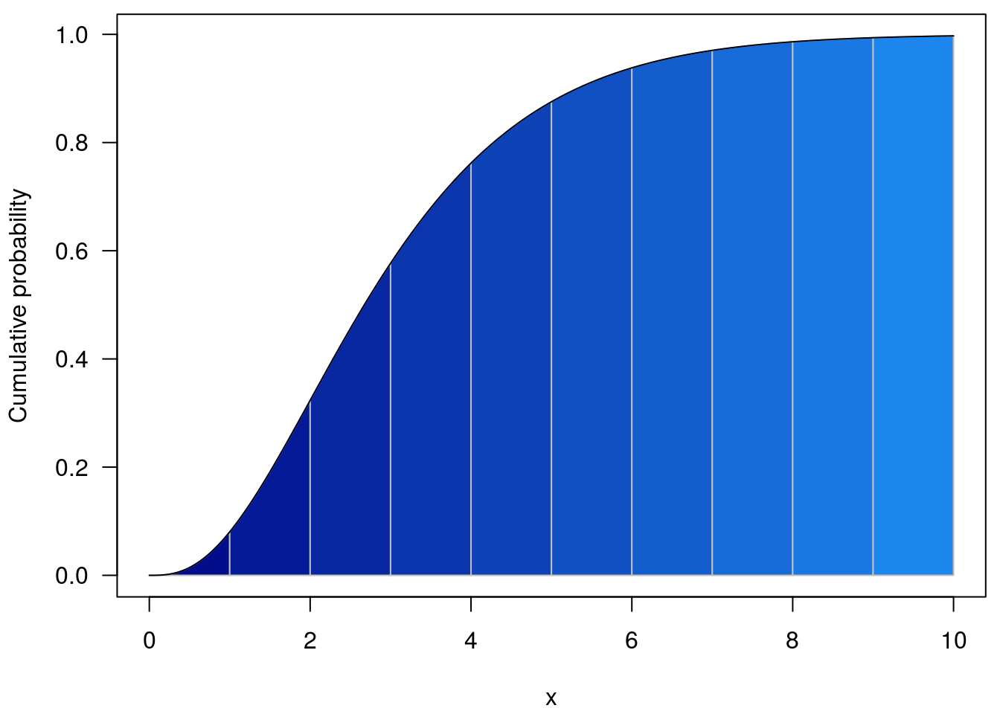

distcrete discretises probability distributions.
The discrete observation of continuous processes is fairly frequent in a range of fields including biology, ecology, and epidemiology. This is typically the case when recording the dates of events as days, weeks, or months, thereby altering the distribution of delays between these events. Let us imagine that events are recorded per day. Two events happening on the same day at 10am and 10pm would result in an observed delay of 0 days (while the actual delay is 12h), while two events happening 2h hours apart, at 11pm first and at 1am on the next day, would be seen as 1 day apart.
Because of such potential biases, discretisation needs to be taken into account when fitting distributions of discretised quantities (such as delays), as well as when simulating them. Quite often, existing discrete distributions are not sufficient to obtain a good fit of discretised data. distcrete provides an alternative by implementing a general approach for discretising continuous distributions.
This section covers both the interface in the package and the ideas behind how the distributions are generated. There are many possible ways of discretising a given distribution onto a set of values and this section tries to justify the approaches taken here and explain how the user can modify them.
This section applies to all the content below. Suppose we have a continuous distribution that is defined on some domain [a, b] (possibly infinite). For example, a gamma distribution with shape 3 and rate 1:
curve(dgamma(x, 3), 0, 10, n = 301)
To discretise this we define:
interval: the (uniform) frequency of discretisation; perhaps 1. There is no default here as you have to decide how your distribution is to be discretised.
anchor: a single value point at which discretisation is valid; perhaps 0 (which is the default). Once an anchor is specified we know that valid ‘x’ positions are {…, anchor - 2 * interval, anchor - interval, anchor, anchor + interval, anchor + 2 * interval, …} where those are on the domain of our underlying distribution.
w: how to collapse intermediate values, and probabilities into the interval. Given that we want a discrete probability mass for position x (which is one of the valid values above), this defines the domain of the underlying function that we integrate over. Specifically we integrate from x - w * interval to x - (1 - w) * interval. So specifying interval = 1, anchor = 0, w = 0 means that looking up position 0 integrates the dstribution over [0, 1]. In contrast specifying w = 0.5 will integrate over [-0.5, 0.5].
To illustrate:
d0 <- distcrete::distcrete("gamma", 1, shape = 3, w = 0)
d1 <- distcrete::distcrete("gamma", 1, shape = 3, w = 0.5)
x <- 0:10
y0 <- d0$d(x)
y1 <- d1$d(x)
par(mar=c(4.1, 4.1, 0.5, 0.5))
col <- c("gold", "steelblue3")
r <- barplot(rbind(y0, y1), names.arg = 0:10, beside = TRUE,
xlab = "x", ylab = "Probability mass", las = 1,
col = col)
legend("topright", c("w = 0", "w = 0.5"), bty = "n", fill = col)
Summed over all ‘x’, these two distributions will both equal 1 (using 100 as “close enough” to infinity here)
sum(d0$d(0:100))## [1] 1sum(d1$d(0:100))## [1] 1but the way that probability distribution is spread over the discrete ‘x’ locations differs.
The cumulative density function (CDF) is key to all calculations throughout.
We follow R’s lead on naturally discrete distributions (e.g. Poisson) and define the cdf as the cumulative probability at x as the probability up to and including x. So this is simply, for an aligned x value this is the cdf of the underlying distribution up to x + (1 - w) * interval.
So with w = 1, the regions integrated are coloured below; for the cumulative density we integrate from -Inf to the line above the point of interest.

and with w = 0.5
The nice thing about this is we can do these calculation without doing any integration; these follow directly from the cumulative density function of the underlying continuous distribution
par(mar=c(4.1, 4.1, 0.5, 0.5))
curve(pgamma(x, 3), 0, 10, n = 301, col = NA,
xlab = "x", ylab = "Cumulative probability", las = 1)
at <- 0:10
cols <- colorRampPalette(c("navy", "dodgerblue2"))(length(at))
for (i in seq_along(at)[-1]) {
xx <- seq(at[i - 1], at[i], length.out = 21)
polygon(c(xx, rev(xx)),
c(pgamma(xx, 3), rep(0, length(xx))), col = cols[i],
border = "grey")
}
curve(pgamma(x, 3), 0, 10, n = 301, add = TRUE)
(this is with w = 0)